Accordo di San Martino: rappresentatività e salari secondo l'ipotesi interconfederale
È stata annunciata un'ipotesi di accordo interconfederale, detto Accordo di San Martino, con cui sindacati confederali e associazioni datoriali fisserebbero criteri comuni di rappr…
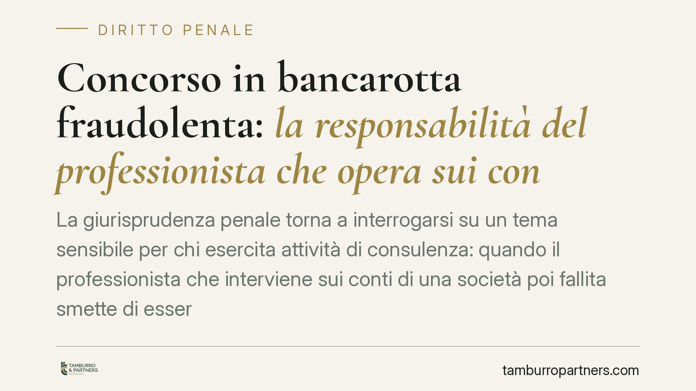
Concorso in bancarotta fraudolenta: la responsabilità del professionista che opera sui conti
La giurisprudenza penale torna a interrogarsi su un tema sensibile per chi esercita attività di consulenza: quando il professionista che interviene sui conti di una società poi fal…
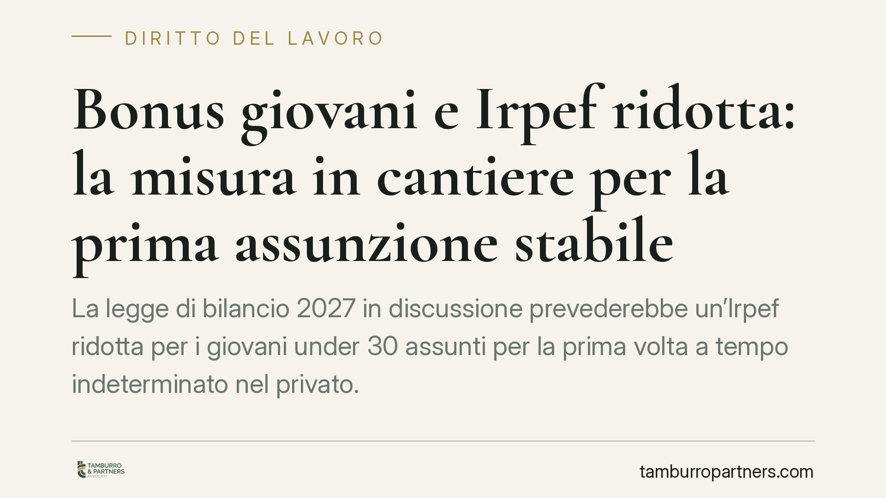
Bonus giovani e Irpef ridotta: la misura in cantiere per la prima assunzione stabile
La legge di bilancio 2027 in discussione prevederebbe un'Irpef ridotta per i giovani under 30 assunti per la prima volta a tempo indeterminato nel privato. La misura è ancora un em…
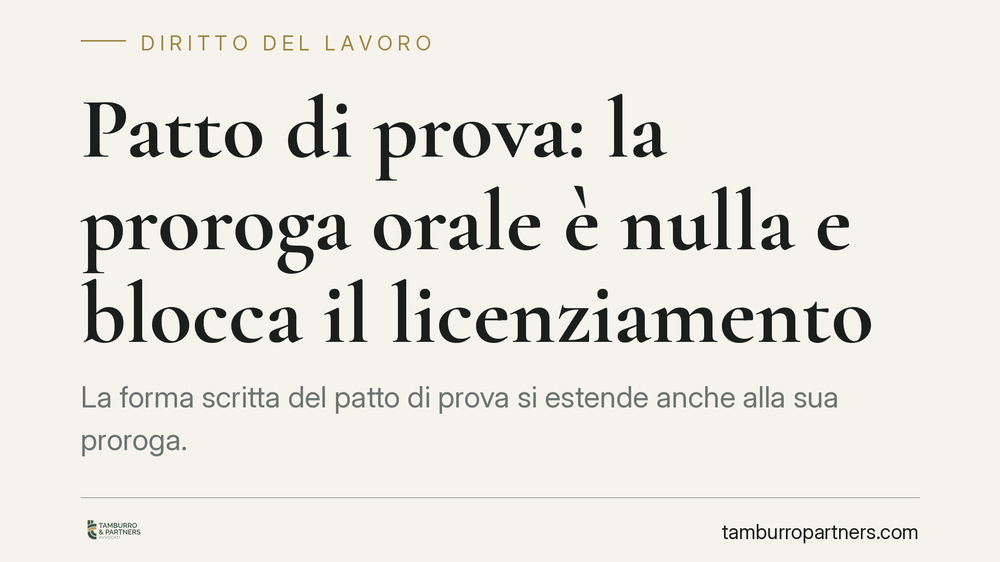
Patto di prova: la proroga orale è nulla e blocca il licenziamento
La forma scritta del patto di prova si estende anche alla sua proroga. Se l'estensione del periodo è concordata solo a voce, è priva di effetti: il rapporto diventa definitivo e il…
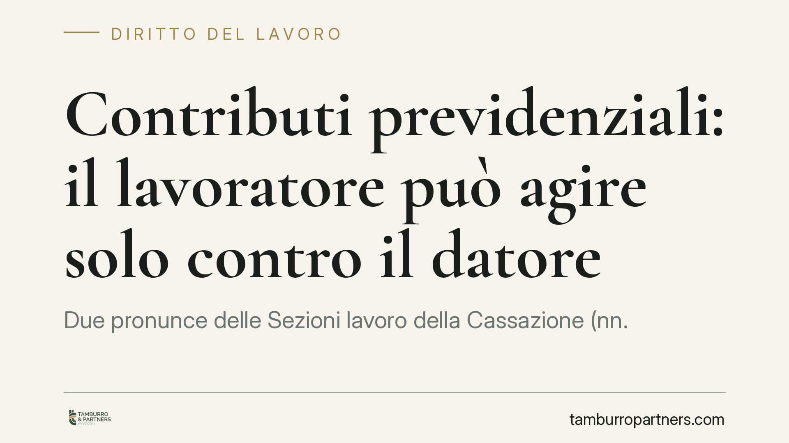
Contributi previdenziali: il lavoratore può agire solo contro il datore
Due pronunce delle Sezioni lavoro della Cassazione (nn. 28751 e 28752 del 2026) segnano una svolta: per ottenere la regolarizzazione dei contributi il lavoratore può citare in giud…

Stalking all'ex: la reazione della vittima non esclude il reato
Chi subisce atti persecutori a volte reagisce: risponde, affronta, cerca di difendersi. La Cassazione chiarisce che questa reazione non annulla il reato di stalking, ma può conferm…
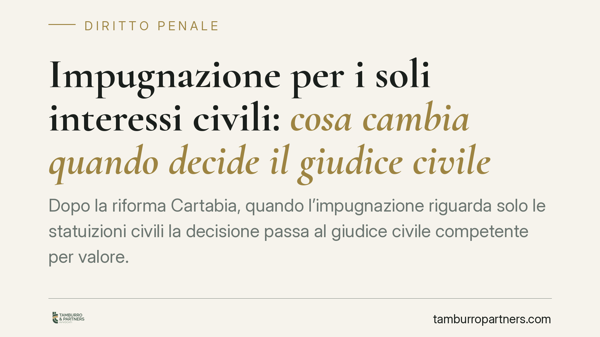
Impugnazione per i soli interessi civili: cosa cambia quando decide il giudice civile
Dopo la riforma Cartabia, quando l'impugnazione riguarda solo le statuizioni civili la decisione passa al giudice civile competente per valore. La disciplina, oggetto di dubbi di c…
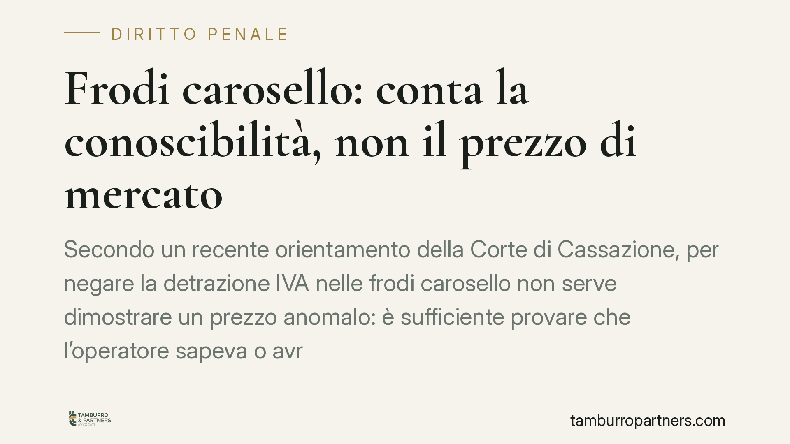
Frodi carosello: conta la conoscibilità, non il prezzo di mercato
Secondo un recente orientamento della Corte di Cassazione, per negare la detrazione IVA nelle frodi carosello non serve dimostrare un prezzo anomalo: è sufficiente provare che l'op…
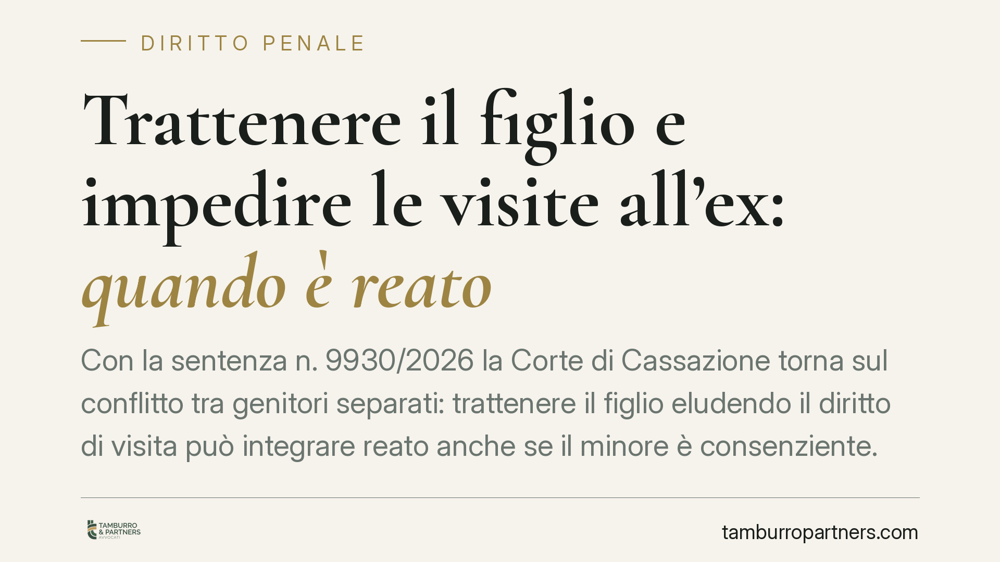
Trattenere il figlio e impedire le visite all'ex: quando è reato
Con la sentenza n. 9930/2026 la Corte di Cassazione torna sul conflitto tra genitori separati: trattenere il figlio eludendo il diritto di visita può integrare reato anche se il mi…
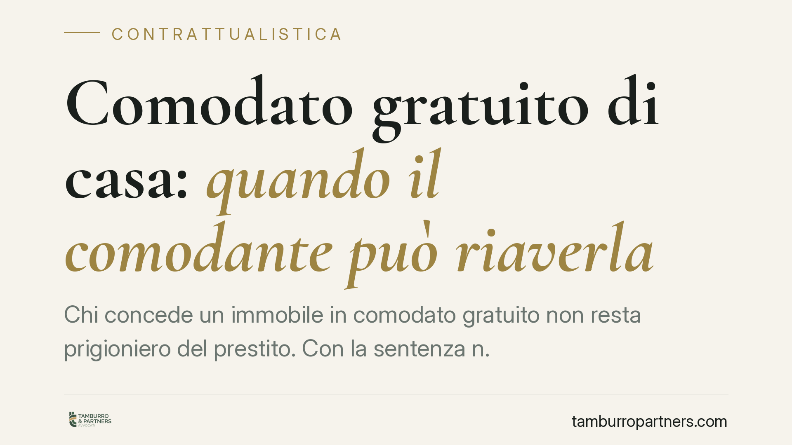
Comodato gratuito di casa: quando il comodante può riaverla
Chi concede un immobile in comodato gratuito non resta prigioniero del prestito. Con la sentenza n. 5814/2026 la Cassazione conferma che il comodante, e poi i suoi eredi, può chied…

Mediazione obbligatoria: quando serve e cosa rischia chi non partecipa
Sei pronunce del 2026 tornano sulla mediazione obbligatoria prevista dal d.lgs. 28/2010. Il quadro che ne emerge è netto: in materia condominiale, successoria e di infiltrazioni il…

Rifacimento del tetto nel condominio con lastrici solari: chi paga?
Nei condomini con coperture miste - un tetto che copre alcune verticali e lastrici solari su altre - la ripartizione delle spese di rifacimento genera frequenti contenziosi. La reg…

Caldaia condominiale guasta: la spesa si ripartisce a millesimi
La Corte di Cassazione, con l'ordinanza n. 1098/2026, torna sulla ripartizione delle spese per l'impianto di riscaldamento centralizzato. La riparazione è manutenzione straordinari…

Casa familiare e trasferimento dell'assegnatario: cosa accade al figlio maggiorenne
L'assegnazione della casa familiare tutela i figli, non chi la abita. Quando il genitore assegnatario si trasferisce in modo stabile altrove, il titolo a occupare l'immobile rischi…

Trasferimento del lavoratore: quando è legittimo e quando no
Il trasferimento del lavoratore resta uno dei terreni più contesi del diritto del lavoro. Serve un passaggio effettivo tra unità produttive distinte e una ragione tecnica, organizz…

Salario minimo agganciato ai contratti collettivi: come cambia la retribuzione adeguata
Con la conversione del D.L. 62/2026 il legislatore àncora la nozione di retribuzione adeguata al trattamento economico complessivo del contratto collettivo leader di settore. Un me…
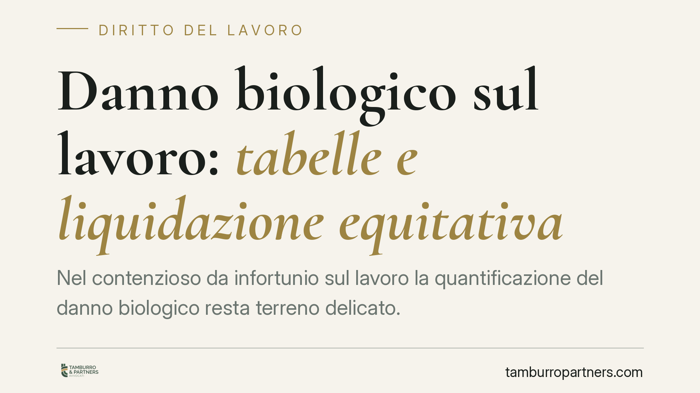
Danno biologico sul lavoro: tabelle e liquidazione equitativa
Nel contenzioso da infortunio sul lavoro la quantificazione del danno biologico resta terreno delicato. Il tema è il rapporto tra indennizzo INAIL e risarcimento civilistico del co…
Credito ai consumatori: nuove tutele fino a 100.000 euro con la CCD2
Il recepimento della direttiva europea sul credito ai consumatori (CCD2, 2023/2225) amplia in modo rilevante il perimetro delle tutele: la soglia di applicazione passa dagli attual…
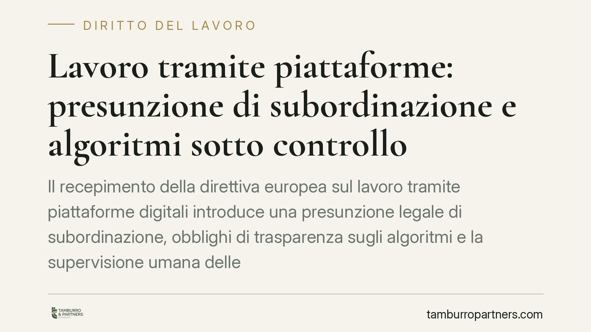
Lavoro tramite piattaforme: presunzione di subordinazione e algoritmi sotto controllo
Il recepimento della direttiva europea sul lavoro tramite piattaforme digitali introduce una presunzione legale di subordinazione, obblighi di trasparenza sugli algoritmi e la supe…
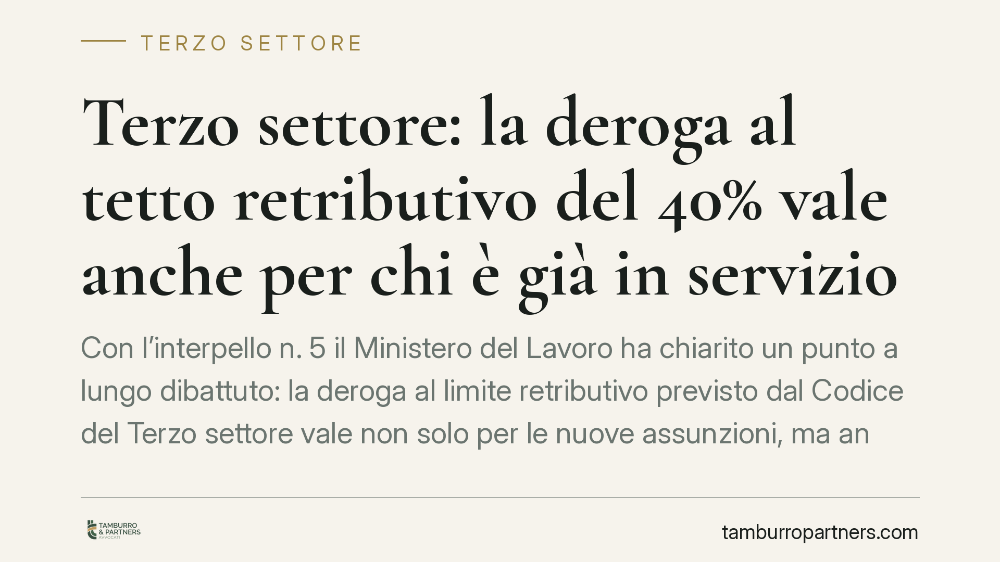
Terzo settore: la deroga al tetto retributivo del 40% vale anche per chi è già in servizio
Con l'interpello n. 5 il Ministero del Lavoro ha chiarito un punto a lungo dibattuto: la deroga al limite retributivo previsto dal Codice del Terzo settore vale non solo per le nuo…
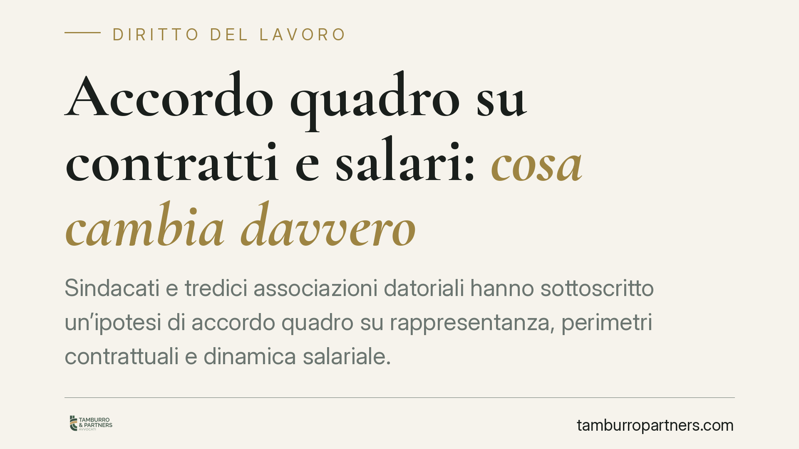
Accordo quadro su contratti e salari: cosa cambia davvero
Sindacati e tredici associazioni datoriali hanno sottoscritto un'ipotesi di accordo quadro su rappresentanza, perimetri contrattuali e dinamica salariale. Si tratta, alla data di p…

Prescrizione e confisca del profitto: perché la società non si salva
La prescrizione del reato non cancella il profitto illecito che una società ha incassato. La confisca diretta di quel profitto, avendo natura ripristinatoria e non punitiva, resist…

Rappresentatività sindacale e datoriale: come si misura e perché conta
Capire quale contratto collettivo applicare non è un dettaglio formale: incide sul salario considerato adeguato e sull'accesso ad agevolazioni fiscali e contributive. Al centro c'è…

Permessi sindacali e controllo GPS: la linea del Tribunale di Salerno
Il Tribunale di Salerno, con la sentenza 1489/2026, ha ritenuto legittimo il controllo investigativo con GPS occulto su un rappresentante sindacale sospettato di usare i permessi r…
Accordo economico della separazione e incapacità naturale: quando è annullabile
Chi firma le condizioni economiche di una separazione mentre non è in grado di comprenderne la portata può chiederne l'annullamento. Una recente pronuncia di merito torna sul punto…

Caporalato e sfruttamento del lavoro: quando scatta il reato ex art. 603-bis c.p.
Il reato di caporalato non riguarda solo l'intermediario che recluta manodopera, ma anche il datore di lavoro che la impiega in condizioni di sfruttamento. L'art. 603-bis del codic…

Nuova convivenza e assegno all'ex: quando si perde il diritto
Chi riceve un assegno dall'ex coniuge e inizia una convivenza stabile rischia di perderlo. Ma gli effetti cambiano a seconda che si tratti di assegno di separazione o divorzile. An…
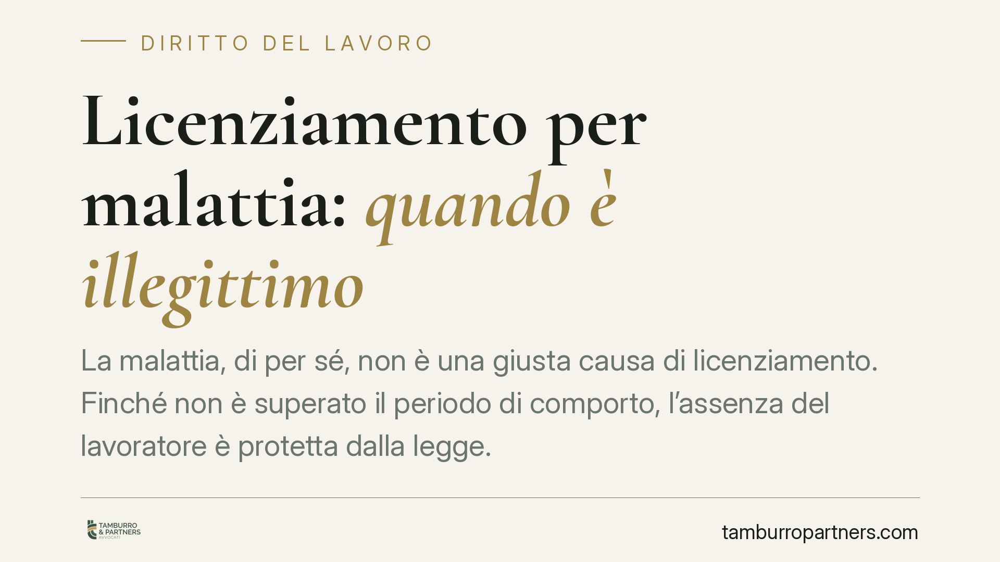
Licenziamento per malattia: quando è illegittimo
La malattia, di per sé, non è una giusta causa di licenziamento. Finché non è superato il periodo di comporto, l'assenza del lavoratore è protetta dalla legge. Capire la differenza…
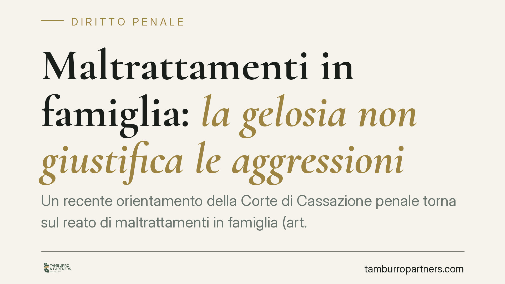
Maltrattamenti in famiglia: la gelosia non giustifica le aggressioni
Un recente orientamento della Corte di Cassazione penale torna sul reato di maltrattamenti in famiglia (art. 572 c.p.), chiarendo che la gelosia della vittima o una sua condotta pr…

Clausole vessatorie e contratti B2B online: il doppio click non basta
Spuntare una casella o cliccare due volte non equivale ad approvare per iscritto le clausole vessatorie di un contratto telematico tra imprese. Lo ha ribadito una recente ordinanza…